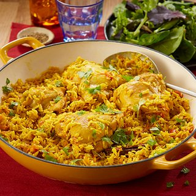

Home
brocolicheese Recipe
Bariis Recipe

Awesome Bariis iskukaris
A fast, flavoursome, traditional 1-pot dish from Somalia. This healthy family meal is lower-calorie but packed with authentic flavours.
- Two teaspoons vegetable oil
- Hundred and fifty grams of onion, chopped
- 1 egg, beaten
- Four or five cloves of garlic, finely chopped
- Two hundred grams of basmati rice, washed and drained
- Six hundred millilitres of water
Steps
step 1
- Heat the oil in a large saucepan
step 2
- Add the chicken, turmeric, cumin powder, coriander, crumbled seasoning cube and grated carrot.
step 3
- Add rise and fill water to the top of the pot and wait